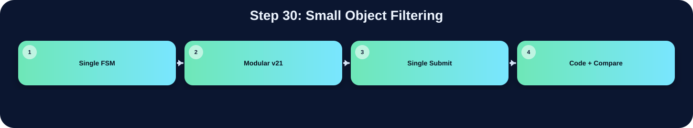

排除過小或疑似雜訊的物件。

此表把本流程在三個版本中的 state/module 與 code 關係整理出來；沒有明確對應者保持空白。
| 版本 | 對應 state / module | 和 code 的關係 |
|---|---|---|
| Single FSM | ||
| Modular v21 | ||
| Single Submit | boxing BOX_IDLE | 如果寬高太小，例如寬或高沒有大於 10，就跳過 |
在「Small Object Filtering」流程中，並非三個版本都有獨立而明確的程式段落。Single FSM 版沒有獨立顯示此流程，可能被合併在其他 state 中，或不需要此階段。Modular v21 版沒有明確獨立此流程，可能由子模組內部合併處理，或該架構不採用此額外階段。Single Submit 版有明確對應，主要在 boxing BOX_IDLE 完成，說明為：如果寬高太小，例如寬或高沒有大於 10，就跳過。這種差異通常來自架構選擇：單一 FSM 會把多個小步驟合併在同一段 state；模組化版本則傾向把功能交給特定子模組；single_submit 則在單檔中保留 module-level 階段。
下方採用下拉式區塊顯示。中文說明放在程式碼上方；原始程式碼本身沒有修改、沒有插入註解。若某份檔案沒有明確對應流程，該程式碼區塊保持空白。
new_label <= 10'd1;
buffer_count <= 8'd0;
pixel_idx_write <= 16'd0;
write_done <= 1'b0;
write_finish <= 1'b0;
flatten_idx <= 10'd1;
ans_addr <= 16'd0;
write_pass_2_done <= 1'b0;
write_pass_2_finish <= 1'b0;
consecutive_label <= 10'd1;
ans_wen <= 1'b1;
ans_cen <= 1'b1;
ans_D <= 32'd0;
labeler_done <= 1'b0;
buffer_done <= 1'b0;
flatten_done <= 1'b0;
READ_PASS_1_done <= 1'b0;
read_pass_2_done <= 1'b0;
pass2_addr <= 16'd0;
read_1_pixel <= 16'd0;
buffer_count_read <= 8'd0;
end
READ_PASS_1:begin
if(write_done_d) begin
pixel_idx_write <= pixel_idx_write + 16'd1;
for(j = 0;j < 256; j = j+1)begin
line_buffer[j] <= label_buffer[j];
//line_buffer[j] <= line_buffer[j+256]; // -----------------------
end
end else begin
img_cen <= 1'b0;
img_addr <= read_1_pixel;
if(read_1_pixel[7:0] < 8'd255)read_1_pixel <= read_1_pixel + 16'd1;
//if(img_addr[7:0] < 8'd255)img_addr <= img_addr + 16'd1;
// input img (waiting two clock let the signal in)
// start from row1 of buffer because the first row of picture would all be 0
if(!img_cen_d)begin
if(buffer_count_read < 8'd255)begin
line_buffer[{1'b1,buffer_count_read}] <= bin_img_Q;
buffer_count_read <= buffer_count_read + 8'd1;
READ_PASS_1_done <= 1'b0;
end else begin
line_buffer[{1'b1,8'd255}] <= bin_img_Q;
READ_PASS_1_done <= 1'b1;
buffer_count <= 8'd0;
end
end
end
end
WRITE_PASS_1:begin
if(READ_PASS_1_done)begin
buffer_count_read <= 8'd0;
READ_PASS_1_done <= 1'b0;
img_cen <= 1'b1;
end else begin
if(buffer_done)begin
buffer_count <= 8'd0;
ans_wen <= 1'b0;
ans_cen <= 1'b0;
ans_addr <= pixel_idx_write;
ans_D <= {22'd0, label_buffer[pixel_idx_write[7:0]]};
//ans_D <= {22'd0, line_buffer[pixel_idx_write[7:0]]}; // ---------------
if(pixel_idx_write[7:0] < 8'd255)begin
pixel_idx_write <= pixel_idx_write + 16'd1;
end else begin
write_done <= 1'b1;
buffer_done <= 1'b0;
read_1_pixel <= read_1_pixel + 16'd1;
//buffer_count <= 8'd0;
end
if(ans_addr == 16'd65535)begin
write_finish<= 1'b1;
ans_wen <= 1'b1;
end
end else if (write_done) begin
// 🛑 終極解藥：捕捉幽靈週期！ 🛑
// 當硬體準備切換到 READ_PASS_1 時，會有一拍的延遲掉進這裡。
// 我們在這裡把 write_done 降下來，並且「不執行任何 CCL 運算」，保護 eq_table！
write_done <= 1'b0;
end else if (!write_finish) begin
ans_wen <= 1'b1;
ans_cen <= 1'b1;
write_done <= 1'b0;
// neighbor are all 0, so give it a new label
if(line_buffer[{1'b1,buffer_count}])begin
if(!neighbor_N && !neighbor_NE && !neighbor_NW && !neighbor_W)begin
label_buffer[buffer_count] <= new_label;
//line_buffer[buffer_count] <= new_label; // -------------
//line_buffer[{1'b1,buffer_count}] <= new_label;
new_label <= new_label + 10'd1;
// neighbor at least one is nonzero, so give it the smallest label, and equive all nonzero label
end else begin
//line_buffer[{1'b1, buffer_count}] <= min_neighbor;
label_buffer[buffer_count] <= min_neighbor;
//line_buffer[buffer_count] <= min_neighbor; // ---------------------
/*if (neighbor_W != 0 && neighbor_W != min_neighbor) eq_table[neighbor_W] <= min_neighbor;
if (neighbor_NW != 0 && neighbor_NW != min_neighbor) eq_table[neighbor_NW] <= min_neighbor;
if (neighbor_N != 0 && neighbor_N != min_neighbor) eq_table[neighbor_N] <= min_neighbor;
if (neighbor_NE != 0 && neighbor_NE != min_neighbor) eq_table[neighbor_NE] <= min_neighbor;*/
// ✨ 終極完全體：保護樹根的 Heuristic 合併法
if (neighbor_W != 0 && neighbor_W != min_neighbor) eq_table[eq_table[neighbor_W]] <= min_neighbor;
if (neighbor_NW != 0 && neighbor_NW != min_neighbor) eq_table[eq_table[neighbor_NW]] <= min_neighbor;
if (neighbor_N != 0 && neighbor_N != min_neighbor) eq_table[eq_table[neighbor_N]] <= min_neighbor;
if (neighbor_NE != 0 && neighbor_NE != min_neighbor) eq_table[eq_table[neighbor_NE]] <= min_neighbor;
end
end else begin
//line_buffer[buffer_count] <= 10'd0; // ------------------------
label_buffer[buffer_count] <= 10'd0;
end
if(buffer_count < 8'd255)begin
//buffer_done <= 1'b0;
buffer_count <= buffer_count + 8'd1;
end else begin
buffer_done <= 1'b1;
end
end
end
end
FLATTEN_TABLE:begin
ans_cen <= 1'b1;
ans_wen <= 1'b1;
img_addr <= 16'd0;
if(flatten_idx < new_label)begin
// Situation A : it is a root
if (eq_table[flatten_idx] == flatten_idx) begin
eq_table[flatten_idx] <= consecutive_label;
consecutive_label <= consecutive_label + 16'd1;
// Situation B : it points to previous one
end else begin
eq_table[flatten_idx] <= eq_table[eq_table[flatten_idx]];
end
flatten_idx <= flatten_idx + 10'd1;
end else begin
flatten_done <= 1'b1;
end
ans_addr <= 16'd0;
end
READ_PASS_2:begin
ans_cen <= 1'b0;
ans_wen <= 1'b1;
ans_addr <= pass2_addr;
write_pass_2_done <= 1'b0;
read_pass_2_done <= 1'b1;
end
WRITE_PASS_2:begin
read_pass_2_done <= 1'b0;
if(read_pass_2_done_d)begin
if(pass2_addr == 16'd65535)begin
ans_wen <= 1'b0;
ans_cen <= 1'b0;
ans_D <= {16'd0, eq_table[ans_Q[15:0]]};
write_pass_2_finish <= 1'b1;
end else begin
ans_wen <= 1'b0;
ans_cen <= 1'b0;
pass2_addr <= pass2_addr + 16'd1;
ans_D <= {16'd0, eq_table[ans_Q[15:0]]};
write_pass_2_done <= 1'b1;
end
end
end
DONE:begin
ans_cen <= 1'b1;
ans_wen <= 1'b1;
labeler_done<= 1'b1;
end
endcase
end
end
endmodule
// ================================================================
// Source: boxing.v
// ================================================================
module boxing(
input clk,
input rst,
input enable,